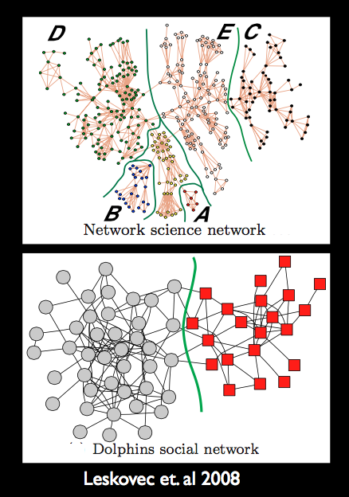
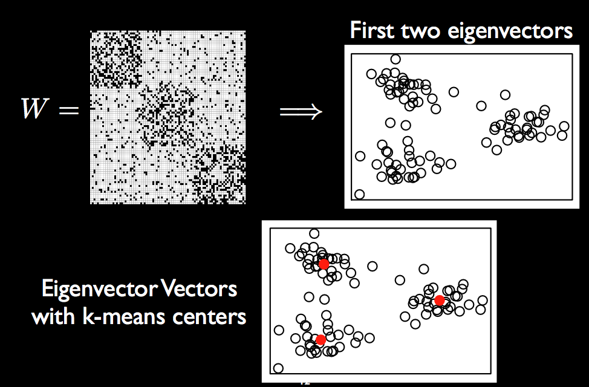
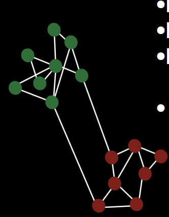

The basic idea behind clustering is that we want to find groups of similar observations in our dataset. The observations within these groups should "cluster together" more than with observations from other groups. The question is, how do we find these groups given that we have no idea even of the number of groups that exist in the dataset? First, we need to define some "distance" metric to describe how "far" different observations are from one another. Clustering is often called unsupervised learning: unsupervised in the sense that we don't pre-define the groups so that our algorithms are not being "supervised" by these pre-existing classes, they much find their own! We will focus on some of the most common approaches to clustering such as K-means, PAM, hierarchical clustering, spectral clustering and the EM algorithm.
Clustering is very much related to network analysis which are extremely prominant in areas such as social network analysis: there are multitudes of researchers whose sole purpose in their professional or academic life (perhaps even in their entire life) is to find communities within social networks, such as those in the images below.

Suppose that we want to find $k$ unique clusters. We can re-write K-means in a more modern setting as follows
$$\hat{\mu} = \underset{M \in \mathcal{R}(n, k)}{\text{arg}~\text{min}} \| X - M\|_F^2$$
where $\| \cdot \|_F^2$ is the Frobenius norm, (where for an $m \times n$ matrix $A$, $\|A\|_F = \sqrt{\sum_{i=1}^m \sum_{j=1}^n |a_{ij}|^2}$) and $\mathcal{R}(n, k)$ is the set of matrices with $k$ columns and $n$ rows, but only $k$ of these rows are unique. The unique rows correspond to the $k$ centroid in the K-means objective function. This formulation allows for direct comparison with other optimization methods such as PCA. Note that $$\underset{M \in \mathcal{R}(n,k)}{\min} \|X - M\|_F^2 = \underset{\{m_1, ..., m_k\} \subset \mathcal{R}^k} \sum_i \underset{g}{\min} \|x_i - m_g \|_2^2$$
To understand what the above formulation is saying: note that K-means aims to minimize the overall distance between the data and the centroids.
Recall our discussion on PCA. Luckily for you, spectral clustering, though it might seem scary at first, is essentially just PCA (the "spectrum" of a matrix refers to its eigenvalues) combined with K-means. The method actualy is actually very prominantly used in network analysis. To make life easier below, we will begin with some network notation. A network (or "graph"), $G$ consists of a vertex set $V$ (for example, each vertex might correspond to a person or a gene) and an edge set, $E$, which contains the set of edges between pairs of vertices (for example, there might be an edge between individual $1$ and $7$ because they are best friends, but there might not be an edge between individual $1$ and $3$ if they severely dislike one another). We often use the notation $$G = (V, E)$$ to describe a network $G$. In community detection, what we're really trying to do is to find $k$ communities (subsets) of nodes (observations) in the graph such that the nodes within each cluster are more highly connected to one another than to the nodes in other clusters. We can define our a set of all possible $k$ communities, $\mathcal{C}_k$ to be $$\mathcal{C}_k = \left\{ (C_1, C_2, ..., C_k) : \forall i \neq j, ~~ C_i \cap C_j = \emptyset, ~ ~ \bigcup_i C_i = V \right\}$$ which can be read as "the $k$ disjoint communities $C_1, C_2, ..., C_k$ that together, contain all of the nodes in $V$". But we still haven't described how to come up with these communities! One formulation is to find the $k$ communities which are defined such that they maximize some partition quality measure (a function that tells us how good out communities are at partitioning the data), $f_G$:
$$\underset{(C_1, ..., C_k) \in \mathcal{C}_k}{\text{arg}~\text{max}}f_G(C_1, ..., C_k)$$
So we've now formulated the problem, but how do we find a suitable measure $f_G$, especially since in most situations, this problem is NP-hard! We'll now describe the spectral clustering approach to this problem, and show that it is essentially PCA combined with K-means.
First, we need to translate the network into a matrix: let's use the symmetric adjacency matrix, $W \in \mathbb{R}^{n \times n}$, whose entries $$W_{ij} = W_{ji} = \begin{cases} 1 & \text{if } (i, j) \in E \\ 0 & \text{otherwise} \end{cases}$$ represent whether or not there exists an edge between observation $i$ and observation $j$ in the network. We can also define the diagonal degree matrix, $ D \in \mathbb{R}^{n \times }$, whose diagonal entries specify the degree (number of incident edges or connections) of each node: $$D_{ii} = \sum_j W_{ij}$$
You might ask, why would we want to use an adjacency matrix? Surely we can define a more informative matrix, for example, instead of simply defining $W_{ij}$ to be $1$ when there is an edge between observations $i$ and $j$, why not let the value in the matrix reflect the strength of the connection? For example, to link back to our discussions on Kernel functions, $K_h$ (an example might be the Gaussian density function), we could define the alternative matrix
$$W_{ij} = K_h(X_i - X_j)$$
where $X_i \in \mathbb{R}^p$ is a vector of the $p$ measured variables for observation $i$. There exist nice thoeretical properties of such formulations, but in the discussion that follow we will proceed with a general adjacency matrix, $W$, defined in any way you like (if you prefer the simple $0-1$ adjacency matrix, that's just fine!).
The next useful object is the Laplacian matrix, typically defined by the symmetric graph Laplacian: $$L_0 = D - W$$
However, just like our adjacency matrix, there are many different possible definitions of the Laplacian matrix, each of which normalize by degree (number of connections) in a slightly different way. For example, the random walk Laplacian: $$L_{rw} = I - D^{-1}W,$$
the normalized symmetric graph Laplacian: $$L_N = 1 - D^{-1/2}WD^{-1/2}$$
and the Laplacian that we will use which is a special version of the normalized symmetric graph Laplacian $${\bf L = D^{-1/2}WD^{-1/2}}$$
Note that performing eigenvalue decomposition of $L$ and $L_N$ yield the same results! So why are we even interested in the Laplacian matrix? It turns out that the second eigenvalue of the normalized Laplacian (both the standard version and our version of it) is closely connected to the conductance of a graph (a measure of how "well-knit" the graph is) via Cheeger's inequality. Conductance controls how fast a random walk on the graph converges to a uniform distribution, but we won't worry too much about that here.
By this point you're probably sitting there wondering if we're ever going to get to spectral clustering itself. The answer is: yes, we are, and here it is: suppose that we want to find $k$ clusters of observations:
Input: Adjacency matrix $W \in \{0, 1\}^{n \times n}$, number of clusters $k$
Find the eigenvectors $X_1, ..., X_k \in \mathbb{R}^n$ corresponding to the $k$ largest eigenvalues of the Laplacian matrix $L$. $L$ is symmetric, so we can choose these eigenvectors to be orthogonal.
Form the eigenvector matrix $X = [X_1, ..., X_k] \in \mathbb{R}^{n \times k}$ whose columns correspond to the eigenvectors.
Treating each of the $n$ rows in $X$ as a point in $\mathbb{R}^k$, perform K-means. This creates $k$ non-overlapping sets $A_1, ..., A_k$ whose union is $1, ..., n$.
Output: $A_1, ..., A_k$. This means that node $i$ is assigned to cluster $g$ is the $i$th row of $X$ is assigned to $A_g$ in step 2.
So really all spectral clustering does is a) PCA on the Laplacian matrix for dimensionality reduction, followed by b) K-means for clustering. So many modern methods that seem complex and fancy are really just concatenating more commonly used, "simpler" methods. It is much easier to build on the work of others than to start from scratch. In actuality, if all reasearchers ever did was come up with new novel methods and had no interest in extending and combining existing methods, we wouldn't get very far!
So given the above discussion, why did we do PCA and K-means? Why not do PCA and hierarchical clustering? Honestly, theres probably not a particularly good reason... we could certainly instead do hierarchical clustering instead of K-means, which is just the convention!

Spectral clustering is adaptive to the intrinsic sturcture of the problem; it works well under a variety of different situations.
The above method does not make any mention of "directed" graphs. In particular, it makes no assumption on the direction of a relationship or connection between two nodes. Consider, for example, the Enron dataset. We can code this example as a network, where the 154 nodes are the employees of the company and the edges are the email communications between the employees. However, a single email is not two-directional: it is sent from one person and received by another. So rather than defining an edge by the presence of an email communication, we could define directed edges, whereby an edge points from employee $i$ to employee $j$ if an email was send from employee $i$ to employee $j$. In this way, the similarity matrix is no longer symmetric (since employee $j$ may not have send the same number of emails to employee $i$ as employee $i$ sent to employee $j$), and we can define it by: $$A_{ij} = \text{the number of emails send from employee $i$ to employee $j$}$$ Similarly, the Laplacian matrix is asymmetric. Standard spectral clustering would produce complex (in the $i = \sqrt{-1}$ sense) eigenvectors on such a matrix, and existing works symmetrize the matrix and subsequently proceed by the usual spectral clustering approach.
The method that we will describe below proposes and examines a specral clustering algorithm that replaces the eigen-decomposition with singular value decomposition, which can be performed on asymmetric matrices to produce left and right eigenvectors (in symmetric matrices, the left and right eigenvectos are equal and correspond to the usual eigenvectors).
The adjacency matrix, $W \in \{0, 1\}^{n \times n}$ for a directed graph is asymmetric: $$W_{ij} = \begin{cases} 1 & \text{ if } i \rightarrow j\\ 0 & \text{ otherwise} \end{cases}$$
so that an entry in the adjacency matrix exists if there is an edge directed from $i$ to $j$ but if there is no edge from $j$ to $i$ (even if there is an edge from $i$ to $j$), then $A_{ji} = 0$. Alternative, we could use a weighted adjacency matrix (where the entries are not simply 0 or 1, but they are 0 in the absence of an edge and nonzero in the presence of an edge), where if $i \rightarrow j$, we have $W_{ij} > 0$. Let's suppose for simplicity, however, that we have the standard $0-1$ adjacency matrix. We can define the number of "parents" (or in-links) of node $i$ as
$$P_{ii} = \sum_k W_{ki} = \sum_{k} 1\{k \rightarrow i\}$$
and the number of "offspring" (or out-links) of node $i$ to be $$O_{ii} = \sum_k W_{ik} = \sum_k 1\{i \rightarrow k\}$$
These can be considered the directional generalizations of degree (number of directed connections), and the Laplacian matrix to be
$$L_{ij} = \frac{W_{ij}}{\sqrt{O_{ii}P_{jj}}}$$
The new directed spectral clustering algorithm, DI-SIM (pronounced "Dice 'em") can be described by
Input: Adjacency matrix $W \in \{0, 1\}^{n \times n}$, number of clusters $k$
Compute the singular value decomposition of $L = U \Sigma V^T$. Remove the columns of $U$ and $V$ that correspond to the $n - k$ smallest singular values in $\Sigma$. Call the resulting matrices $U^k \in \mathbb{R}^{n \times k}$ and $V^k \in \mathbb{R}^{n \times k}$
Cluster the nodes based on similar parents by treating each row of $V^k$ as a point in $\mathbb{R}^k$. Cluster these points with K-means. Because each row of $V^k$ corresponds to a node in the graph, the resulting clusters are clusters of the nodes.
Cluster the nodes based on similar children by performing step two on the matrix $U^k$.
Output:the clusters from Steps 2 and 3.
The directed spectral clustering algorithm creates two sets of clusters.
In 15-lec8.1 there is a description of SVD that I need to put in somewhere, probably in the PCA file
First, we computed the left and right singular vectors of the directed graph Laplacian. Suppose that we restrict to only the second, third, fourth and fifth vectors, then we have two matrices with 154 rows and 4 columns. Two rows in the matrix of left singular vectors are "close" if those two employees sent many messages to the same people. Whereas two rows inthe matrix of the right singular vectors are close if those two employees received many messages from the sample people.
FINISH ME!
There are two primary realms of community detection algorithms:
Parametric model fitting approaches, and
Algorithmic and data driven approaches.
In the parametric model fitting approach, we suppose that a network model in which community memberships have a parametric representation. We aim to estimate these parameters which are considered the "true" clusters (recent examples include Nowicki and Snijders (2001), Handcock et al. (2007) and Airoldi et al. (2008). On the other hand, the algorithmic and data driven approach is motivated by observations, heuristics, and insights into the appearance of clusters. The user of such approaches hopes to find plausible clusters, but does not assume the existence of "true" clusters (recent examples involve spectral clustering, Girvan-Newman).
However, how do we know that we should ever trust the output of an algorithm? Many people tend to use the same methods over and over again because they found that the method worked well for them in the past. Is this ridiculous? Probably not that ridiculous... it might not be the absolute best method, but at least they've had success with it in some setting and have been working with the method for a long time and so hopefully have a fairly thorough understanding of the method. In general, however, it is very impotant to perform "down-stream" validation analysis to assess the empirical performance of a method. What do we mean by "down-stream" analysis? First, perhaps, we should ask the question: how do you know that the clusters you've obtained from your method of choice are meaningful? Typically we don't know the true clusters (if there even are true clusters...), and if we did, we would have no need to estimate the clusters in the first place!
The typical computer-science approach to such questions is to show that particular algorithms yield approximate solutions that are "close" to the true empirical optimum for a particular set of network data. However, just because the algorithm has the capabilities to attain "close to optimal" solutions, how do you know that it has done so for your data?
In contrast, the statistical approach asks: how does the algorithm perform on tractable stochastic models with clearly defined population clusters? Do we get close to the truth (that we build into the model)? To understand what this means, we first need to define the Stochastic Block Model (SBM). In an SBM, each node belongs to a "block", edges are randomly placed between nodes based on independent Bernoulli random variables and the probability of an edge between two nodes depends only on the block membership of those two nodes. In particular, we can think of the blocks as the "true" clusters and make the probability of an edge high between nodes in the same block and the probability of an edge low between nodes in different blocks.

If we can show that a clustering algorithm can accurately detect these blocks (the clustering algorithm estimates the block membership for each node) then we should be fairly confident that the algorithm performs well. But is this enough to be sure that the algorithm performs well in all circumstances?